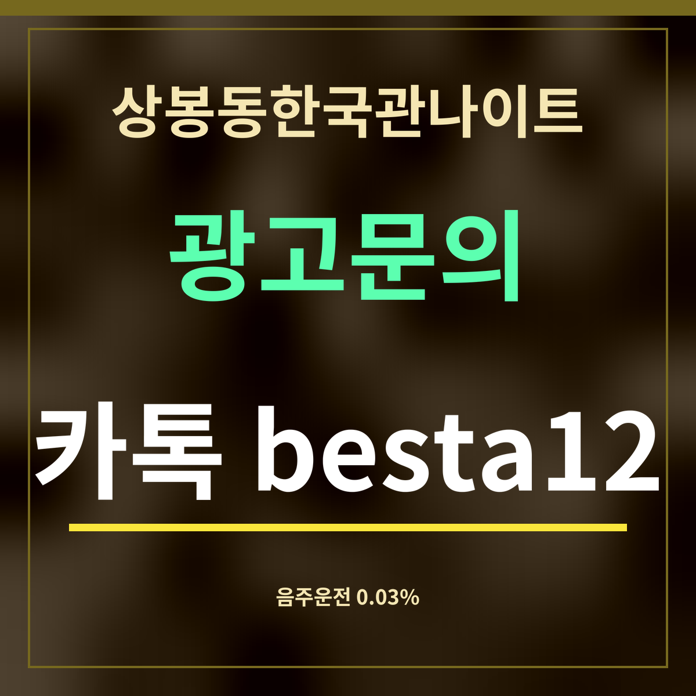

19세 미만 출입 금지
상봉동한국관나이트 대리 부를까, 음주운전 기준 0.03%
제휴 없는 정보 안내 · 법 내용은 법제처 「찾기쉬운 생활법령정보」(2026년 8월 15일 기준 · 도로교통법 제44조 등)에서 옮겼습니다. 이 자료는 2026년 12월 3일 시행 개정을 아직 반영하지 않았다고 밝히고 있습니다.

요약: 운전이 금지되는 기준은 혈중알코올농도 0.03% 이상입니다. 상봉동한국관나이트에서 술을 마셨다면 차는 두고 대리운전, 택시, 대중교통으로 돌아가세요.
농도별 처분과 벌칙
| 혈중알코올농도 | 행정처분 | 벌칙 |
|---|---|---|
| 0.03% 이상 0.08% 미만 | 1년 이내 면허 정지 · 벌점 100점 | 1년 이하 징역이나 500만원 이하 벌금 |
| 0.08% 이상 0.2% 미만 | 면허 취소 | 1년 이상 2년 이하 징역이나 500만원 이상 1천만원 이하 벌금 |
| 0.2% 이상 | 면허 취소 | 2년 이상 5년 이하 징역이나 1천만원 이상 2천만원 이하 벌금 |
기준을 넘어 운전하다 사고로 사람을 죽거나 다치게 하면 면허가 취소됩니다. 여러 번 어긴 경우와 측정을 거부한 경우는 더 무겁게 다뤄지니, 세부는 원문에서 확인하세요.
차를 가져왔을 때 고를 수 있는 것
- 대리운전 — 차를 집까지 가져가야 할 때. 부르기 전에 요금을 먼저 물어보세요.
- 차를 두고 가기 — 가게 주변에 차를 두고 다음 날 가져가는 방법. 주차 가능 시간을 확인하세요.
- 심야버스 — 180m 떨어진 망우역(중)에 N26·N72가 섭니다.
잠을 조금 자고 운전하면 괜찮다고 생각하기 쉽지만, 기준은 운전하는 순간의 농도입니다. 술이 깼다고 느껴도 농도가 남아 있을 수 있으니, 마신 날 밤에는 운전을 계획하지 마세요.
자주 묻는 것
몇 %부터 음주운전인가요?
혈중알코올농도 0.03% 이상이면 운전이 금지되는 술에 취한 상태입니다.
0.03%면 어떤 처분을 받나요?
0.03% 이상 0.08% 미만이면 1년 이내 면허 정지와 벌점 100점이며, 1년 이하 징역이나 500만원 이하 벌금 대상입니다.
면허가 취소되는 기준은요?
0.08% 이상에서 운전했거나, 0.03% 이상에서 운전하다 사고로 사람을 죽거나 다치게 한 때입니다.
한 줄 정리: 0.03%부터 음주운전 — 상봉동한국관나이트에서 마셨다면 차는 두고 가세요.
돌아가는 버스는 심야버스 N26·N72 타는 곳을 보세요.